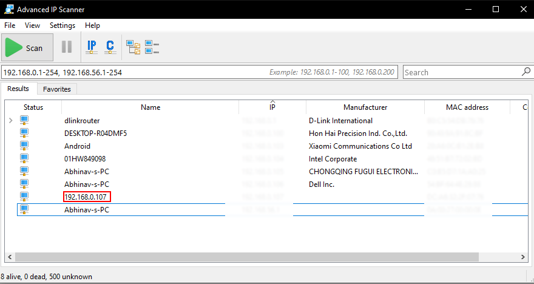
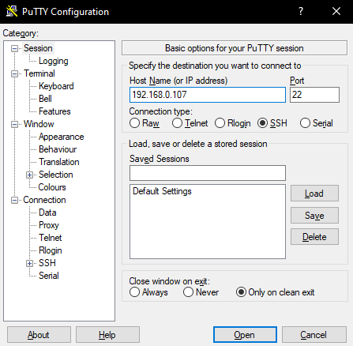
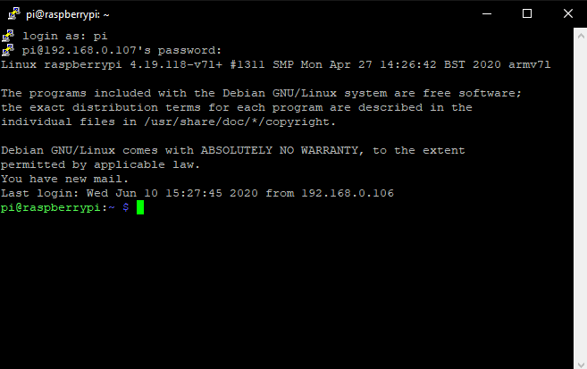
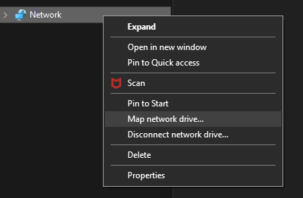
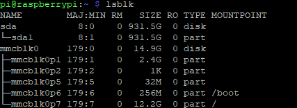
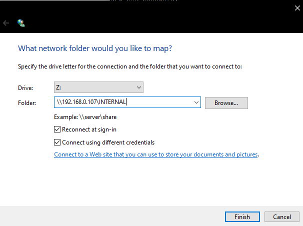

NAS Server using a Raspberry Pi 4
Make Network Attached Storage Server using a RaspberryPi

Network-attached storage (NAS) is a file-level (as opposed to block-level) computer data storage server connected to a computer network providing data access to a heterogeneous group of clients. NAS is specialized for serving files either by its hardware, software, or configuration. It is often manufactured as a computer appliance – a purpose-built specialized computer. NAS systems are networked appliances that contain one or more storage drives, often arranged into logical, redundant storage containers or RAID.
Things required:
- Raspberry Pi 3 or later versions.
- WiFi router.
- 2 Ethernet patch cables.
- Micro SD card with NOOBS installed.
- Advanced IP scanner.
- PuTTY
For this project you have to completely set up and install any distro of the Raspberry Pi OS on your RaspberryPi.
SSH into your RaspberryPi
- Using Advanced IP scanner scan your network for the RaspberryPi's IP address. 
- In the names column, usually, 'raspberrypi' shows up, but, in exceptional cases, the IP address directly shows up. Save this IP address somewhere to use it later.
- Open up PuTTY and enter the IP address of your RaspberryPi. 
- A terminal window should open up and it will ask you for your RaspberryPi username and password. Default username and password are: pi and raspberry.
- If your terminal looks like the one shown below, you've succefully executed all the steps listed above. You continue to the next section. 
Install and Setup Samba Server
- To share files from our NAS server, we need to install the Samba Package which will contain all the required apps and config files.
- After installation make a directory to put all the shareable files.
- Now, access the config folder of Samba from root.
- Now, create a password for the nework storage we've created.
- Now let us Map theis folder to a network drive on Windows. 
- You've now successfully set up a NAS server on your Raspberry Pi. But, the only storage space accessible is the SD Card memory on your RaspberryPi. Proceed to thenext section to tackle this issue.
- Connect your external storage drive via the USB slot on your RaspberryPi. Now got the PuTTY terminal and type the command 'lsblk'. You'll be able to see all the connected devices. For this tutorial, I am using a 1TB hard drive. 
- To mount this drive, we need to install the "ntfs-3g" package.
- Now, craete a root folder to mount our external drive.
- Now, to finally mount the external hard drive, enter the following command on the PuTTY terminal.
- If you've followed all the above steps correctly, your drive is now succesffully mounted. To check is your drive mounted properly, enter "df -h" and check if your "EXTERNAL" folder is listed there.
- Now, we have to share this "EXTERNAL" folder for network access. For this, repeat steps 3 through 5 in the "INSTALL AND SETUP SAMBA SERVER" SECTION.
$ sudo apt-get install samba samba-commmon-bin$ mkdir /home/pi/INTERNAL$ sudo vi /etc/samba/smb.conf[INTERNAL]
comment = internal Files
browseable = yes
path = /home/pi/INTERNAL
writeable = yes
create mask = 0777
directory mask = 0777
browseable = Yes
public = yes
$ sudo smbpasswd -a $ sudo /etc/init.d/samba restart$ sudo /etc/init.d/smbd restart
Now, you'll be asked to enter the password you set for the shared folder earlier. Enter the password and a new network drive will show up on your Windows Explorer.
Connecting an External Storage Drive
Here, the 1TB HDD is shown as 'sda' and the NTFS file system partition is shown as 'sda1'.
$ sudo apt-get install ntfs-3g$ sudo /EXTERNAL$ sudo mount /dev<drive name here> /EXTERNAL$ sudo blkid